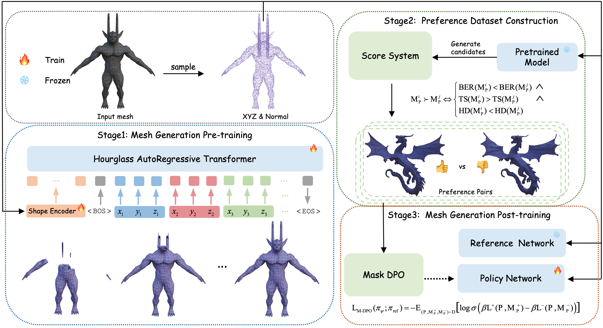

Abstract
Existing pretrained models for 3D mesh generation often suffer from data biases and produce low-quality results, while global reinforcement learning (RL) methods rely on object-level rewards that struggle to capture local structure details. To address these challenges, we present Mesh-RFT, a novel fine-grained reinforcement fine-tuning framework that employs Masked Direct Preference Optimization (M-DPO) to enable localized refinement via quality-aware face masking. To facilitate efficient quality evaluation, we introduce an objective topology-aware scoring system to evaluate geometric integrity and topological regularity at both object and face levels through two metrics: Boundary Edge Ratio (BER) and Topology Score (TS). By integrating these metrics into a fine-grained RL strategy, Mesh-RFT becomes the first method to optimize mesh quality at the granularity of individual faces, resolving localized errors while preserving global coherence. Experiment results show that our M-DPO approach reduces Hausdorff Distance (HD) by 24.6% and improves Topology Score (TS) by 3.8% over pre-trained models, while outperforming global DPO methods with a 17.4% HD reduction and 4.9% TS gain. These results demonstrate Mesh-RFT's ability to improve geometric integrity and topological regularity, achieving new state-of-the-art performance in production-ready mesh generation.
Method
The proposed Mesh-RFT Framework. The pipeline comprises three stages: 1) Mesh Generation Pre-training using an Hourglass AutoRegressive Transformer and a Shape Encoder; 2) Preference Dataset Construction where a pretrained model generates candidate meshes, and a topology-aware score system establishes preference pairs; and 3) Mesh Generation Post-training which employs Mask DPO with reference and policy networks for subsequent refinement.
Mesh Generation Progress
During training, meshes are arranged in a bottom-up manner, resulting in generated meshes being produced in a sequential bottom-to-top order.

Generated Mesh Conditioned on point cloud from Artist Mesh

Generated Mesh Conditioned on point cloud from Dense Mesh